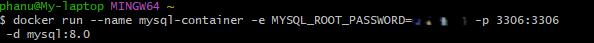
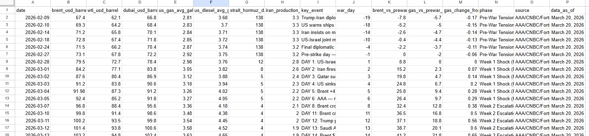
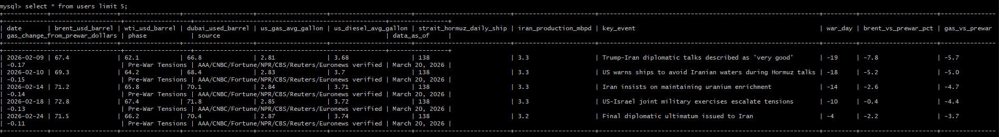

DataBridge: MySQL to AWS
Design and implement an end-to-end data pipeline that ingests raw CSV data into a local MySQL database using Docker, performs data cleaning and transformation, and securely migrates the processed data to a cloud-based AWS RDS instance. The project demonstrates practices in database management, backup generation, cloud deployment, and production-level data validation.

Overview OF WORKFLOW
🐳 Local Environment
Run MySQL locally using Docker in an isolated setup.
📥 Data Ingestion
Import CSV data into MySQL and perform cleaning.
💾 Backup
Generate SQL dumps for backup and migration.
☁️ Cloud Deployment
Deploy a scalable database using AWS RDS.
🔄 Migration
Transfer data from local MySQL to the cloud.
✅ Insert and Verify
Insert and verify data in a production-like environment.
🐳 Run MYSQL using Docker
This function below calculates the estimated longevity of materials based on their thickness loss over time. It processes the dataset by first determining the material loss per year, then estimating how many years remain before the material reaches full degradation based on its current thickness. This simplified approach does not take into account other factors such as pipe size, temperature, or operating conditions
docker run --name mysql-container \
-e MYSQL_ROOT_PASSWORD=thepasswordthatyousetup \
-p 3306:3306 \
-d mysql

Verify the container is running on Docker

Once the MySQL database (mydb) is set up inside the Docker container, the next step in the pipeline is to define a table that matches the structure of the raw dataset. Since the goal is to preserve the original data without transformation at this stage, all fields are stored as VARCHAR(300). This ensures flexibility during ingestion and avoids data loss due to strict typing.
CREATE TABLE users (
`date` VARCHAR(300),
brent_usd_barrel VARCHAR(300),
wti_usd_barrel VARCHAR(300),
dubai_usd_barrel VARCHAR(300),
us_gas_avg_gallon VARCHAR(300),
us_diesel_avg_gallon VARCHAR(300),
strait_hormuz_daily_ships VARCHAR(300),
iran_production_mbpd VARCHAR(300),
key_event VARCHAR(300),
war_day VARCHAR(300),
brent_vs_prewar_pct VARCHAR(300),
gas_vs_prewar_pct VARCHAR(300),
gas_change_from_prewar_dollars VARCHAR(300),
phase VARCHAR(300),
source VARCHAR(300),
data_as_of VARCHAR(300)
);
📥 Data Ingestion
Before run this cmd, make sure your terminal (bash) is currently inside the folder where your file is located. First, we need to load the dataset to Docker. Copy the file into a running Docker container because container is an isolated environment.
After creating the users table, the next step is to import the raw CSV dataset into MySQL. Since a .csv file is a plain text format, MySQL needs explicit instructions to understand how the data is structured. We define the delimiters for columns and rows so that the database can correctly map each value into the corresponding table fields. Additionally, we skip the header row to prevent column names from being inserted as data.
LOAD DATA LOCAL INFILE '/iran_war_oil_prices_daily_2026.csv'
INTO TABLE users
FIELDS TERMINATED BY ','
LINES TERMINATED BY '\n'
IGNORE 1 ROWS;SELECT * FROM users;
Export Data Dump
A database dump creates a full backup of a database, including both the schema (structure) and the data (rows). It preserves data types, table definitions, and relationships, and works like a snapshot of the database at a specific point in time.
mysqldump -u root -p mydb > backup.sql☁️ Cloud Deployment
I created a database name mydb in AWS RDS and configured it for secure access. Set inbound rules in the security group to allow only my IP address and outbound to 0.0.0.0/0. This ensure only my computer (on-prem) can access to the database. Next, I connected the local MySQL client to the AWS RDS instance using: Endpoint (host) Username Database Password
mysql -h my-rds-endpoint.amazonaws.com
-u admin -p Inside the mydb database we just created, I created another database called oil_db, and created a table named users within it to prepare for the migration. The migration of backup.sql will be transfered to the table users in oil_db
🔄 Migrations
To migrate the data from the local MySQL database to the AWS RDS instance, I used the SQL dump file created earlier. The dump file contains all the necessary SQL commands to recreate the database schema and insert the data into the new environment.
mysql -h my-rds-endpoint.amazonaws.com
-u admin -p mydb < backup.sql✅ Insert and Verify Data
New data was inserted into the source MySQL database to validate that the migration to AWS RDS was successful.
INSERT INTO users (date, brent_usd_barrel, wti_usd_barrel)
VALUES ('2026-4-29', '69.0', '70.1');While working on this project, I realized there are alternative and faster ways to migrate data to AWS RDS. For example, AWS RDS can directly import .csv files in some workflows, meaning it is possible to avoid using Docker and generating a SQL dump. However, using a database dump is generally a safer and more reliable method, especially when preserving schema and data consistency. I used the AWS Free Tier for this project to handle data migration. While this approach is suitable for small datasets, performance and cost considerations become important for larger-scale data. For bigger datasets, using RDS alone may become more expensive over time, even though it provides fast query performance. A more scalable approach would be:
- Store raw data in Amazon S3
- Use Amazon Athena for querying data directly without fully loading it into a database
- Store CSV in AWS S3 before loading (CSV → S3 → ETL script → RDS)
- Add Apache Airflow for pipeline automation (Runs your ETL every day/hour)
- Add Docker Compose for multi-service setup (automation)